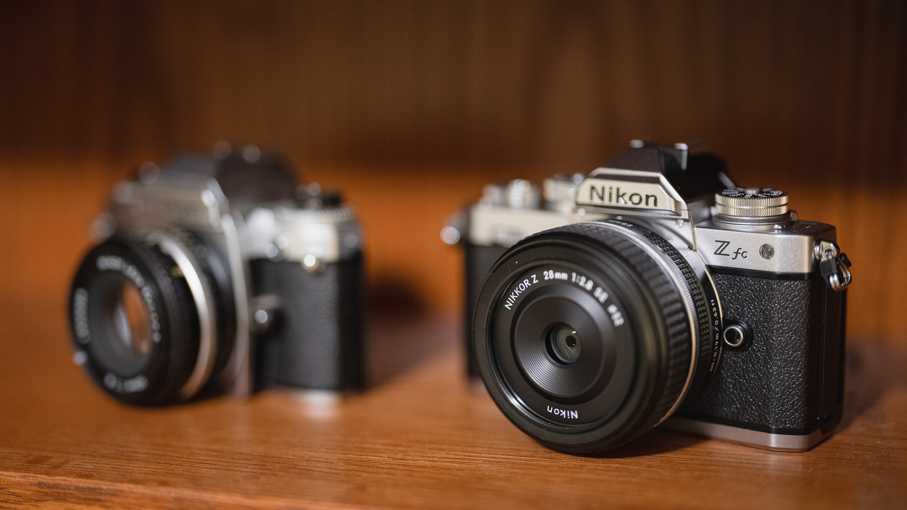

Photo Editing
Photo editing is a transformative process that allows us to enhance, retouch, and manipulate images to achieve the desired visual impact. Using various software tools, such as Adobe Photoshop or Lightroom, photographers and digital artists can correct imperfections, adjust colors and exposure, and add creative effects. From simple tweaks to complex manipulations, photo editing enables us to bring out the best in our pictures, making them more captivating and memorable. Whether it's refining portraits, creating stunning landscapes, or crafting imaginative compositions, photo editing empowers us to unleash our artistic vision and tell powerful visual stories.
Street Photography
Street photography is a genre of photography that involves capturing candid and unposed photographs of people, objects, and events in public places. The subjects of street photography are often ordinary people going about their daily lives, and the photographs may be taken in urban or rural environments.
Creative Photography
Creative photography is an expressive form of art that transcends the boundaries of traditional image-making. It goes beyond capturing moments to explore unique perspectives, emotions, and concepts. Through imaginative composition, lighting, and post-processing techniques, creative photographers infuse their work with a distinct vision, leaving a lasting impact on viewers. By experimenting with various styles, such as abstract, conceptual, or surreal, they challenge conventions and breathe life into their subjects. Creative photography is a realm where imagination knows no limits, allowing artists to turn ordinary scenes into extraordinary visual masterpieces, igniting curiosity and inspiring new ways of seeing the world.
Blog
Gadgets
The Nikon Z series is a revolutionary lineup of mirrorless cameras introduced by Nikon, designed to deliver exceptional image quality and versatility. Known for their innovative Z-mount system, these cameras boast larger lens mounts, allowing more light to enter and resulting in sharper images with beautiful bokeh. The Nikon Z series incorporates full-frame sensors, providing photographers with impressive low-light performance and dynamic range. These cameras also feature in-body image stabilization, high-speed autofocus, and advanced video capabilities, catering to both photography enthusiasts and professional content creators. With a sleek and ergonomic design, the Nikon Z series offers a seamless shooting experience, making it a compelling choice for those seeking cutting-edge technology and creative freedom in their photography endeavors.
Software
Lightroom and Photoshop are both powerful software tools that are commonly used by us.
Lightroom is a photo management and editing software that allows photographers to organize, edit, and share their photos all in one place. It offers a wide range of features for color correction, exposure adjustments, noise reduction, and more. Lightroom also can batch process photos, which can save photographers a significant amount of time when working with large numbers of images.
Photoshop, on the other hand, is a more advanced image editing software that offers even greater control over image editing and manipulation. It is commonly used for tasks such as compositing, retouching, and creating graphic designs. Photoshop offers a wide range of tools and features, such as layers, masks, and brushes, that allow photographers to make precise adjustments to their images.